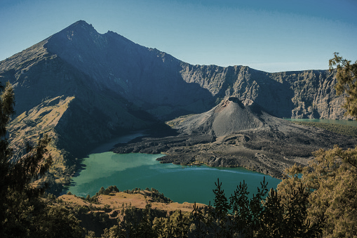

Jelajahi Keindahan Alam Indonesia
Mendaki gunung adalah kegiatan yang tepat jika anda ingin
berekreasi sambil menikmati Keindahan alam. Di indonesia sendiri,
banyak sekali gunung-gunung indah yang seringkali menjadi
destinasi bagi para pendaki. Berikut beberapa diantaranya.
Selengkapnya

Gunung Rinjani
Gunung Rinjani terletak di kawasan konservasi Taman Nasional
Gunung Rinjani yang berada di Nusa Tenggara Barat, Pulau Lombok
bagian Lombok Timur. Gunung ini memiliki ketinggian sekitar 3.726
mdpl.
Gunung Rinjani adalah salah satu gunung yang menjadi favorit para
pendaki karena gunung ini terkenal sangat indah. Bahkan gunung ini
disebut-sebut sebagai wisata pendakian gunung terindah di Asia
Tenggara.
Gunung ini memiliki pemandangan indah yang banyak mulai dari pada
sabana yang banyak ditumbuhi bunga edelweis, pemandangan matahari
terbit yang sangat indah, lalu ada pemandangan paling indah di
gunung ini pada ketinggian 2000 meter, yaitu Danau Segara Anak.
Danau ini memiliki keunikan yaitu di tengah-tengah danau tersebut
ada sebuah gunung kecil yang dikenal dengan Gunung Barujari.
Destinasi Lainnya